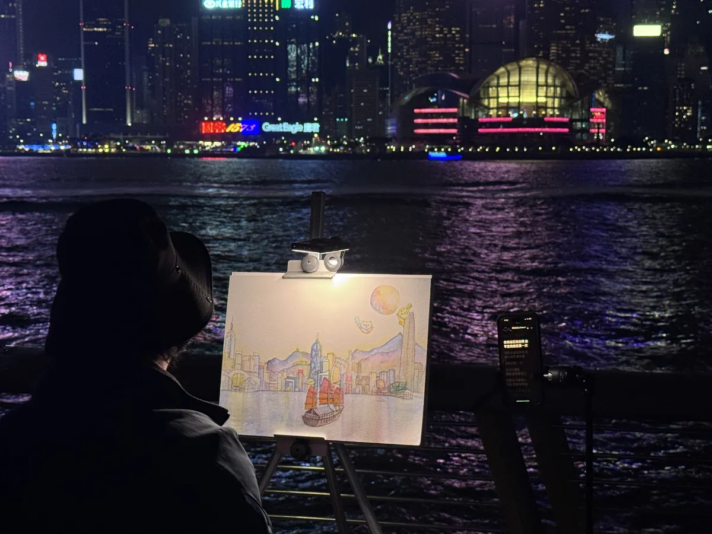
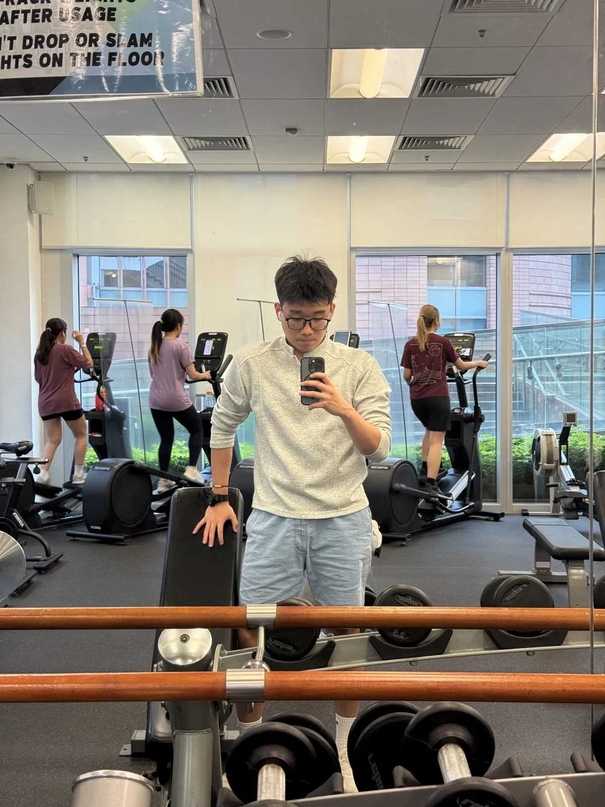
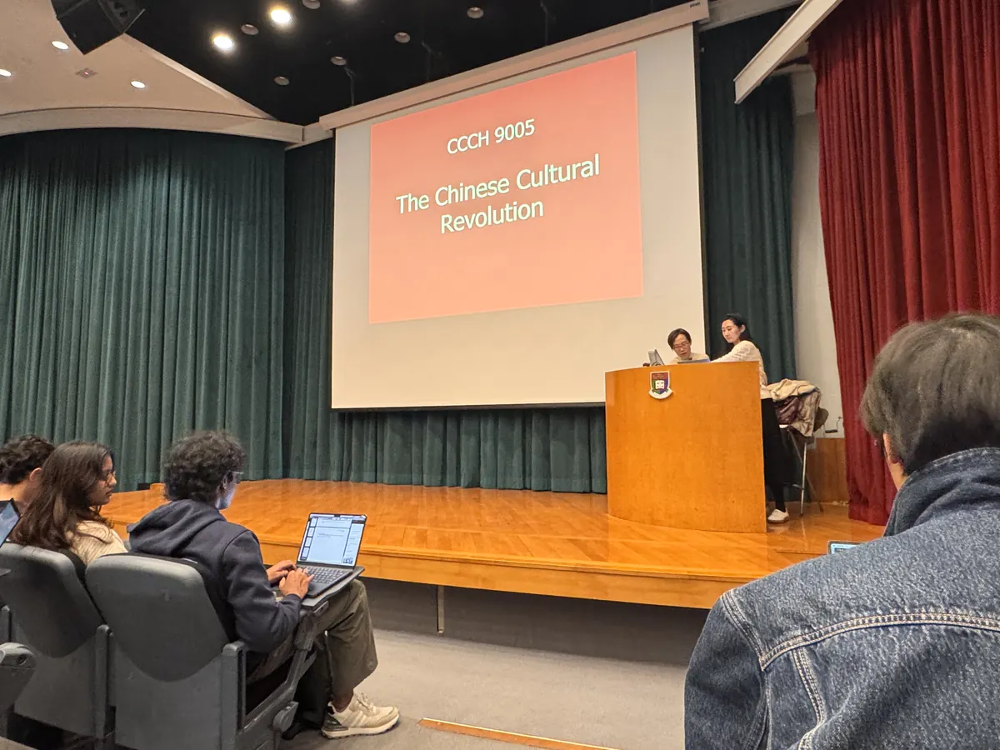
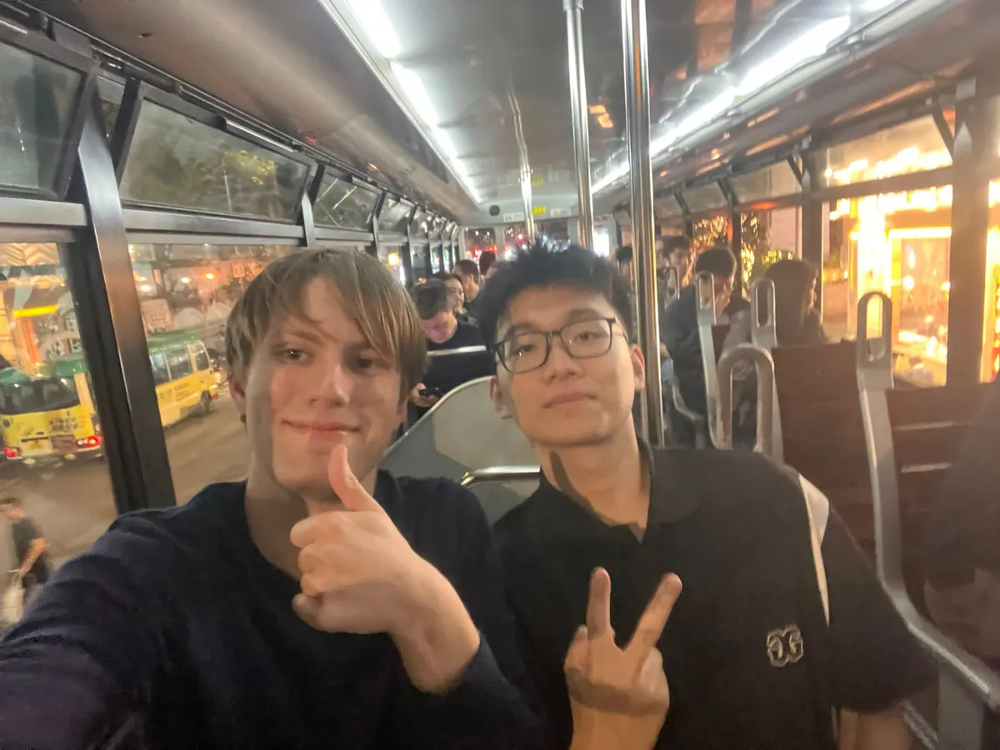
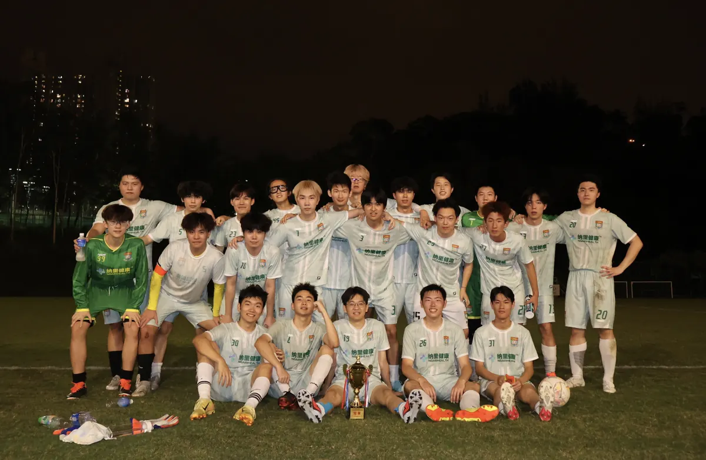

2025年9月，我从海口来到香港，进入香港大学 School of Computing and Data Science，拟分流 AI & Data Science 方向。离开那片熟悉的土地，才真正明白：知识不只来自课堂，成长需要整个人全力投入生活本身。
In September 2025, I left Haikou for Hong Kong and entered HKU's School of Computing and Data Science, with AI & Data Science as my intended track. Leaving familiar ground taught me that knowledge does not only come from class; growth asks for full participation in life.
我给这段时间定了四个维度——学习、运动、社交、实习。不是因为别人告诉我应该这样，而是我自己想活得更完整一点。
I organized this chapter around four dimensions: study, sports, social life, and internship. Not because anyone assigned them to me, but because I wanted to live with more range.
保持了稳定的绩点，但我从不认为课堂是知识的边界。Python、C、数据分析、Linux——这些是课堂里的；Vibe Coding、虚拟货币、营养学、运动学、政治经济学——这些是我自己去找的。
I kept a solid GPA, but I never treated the classroom as the edge of learning. Python, C, data analysis, and Linux came through coursework; vibe coding, crypto, nutrition, exercise science, and political economy came through my own curiosity.
我参加了第11届香港大学生创新及创业大赛，作为团队发起人提交了"人才暨机械人运营中心"完整商业提案。赢没赢奖不是重点，把一个想法打磨成18页商业文件，才是真实的锻炼。
I entered the 11th HKU Innovation and Entrepreneurship Competition as the founder of a "Talent & Robotics Operations Center" proposal. The real exercise was turning a rough idea into an 18-page business document.
我还担任编程与机器人研学团的助教，把自己正在学的东西教给更小的学生——能教会别人，才算真正学会。
I also worked as a teaching assistant for a coding and robotics study camp. Teaching younger students forced me to make my own understanding clearer.
高考结束后，我的体重飙升到87.5 kg——是我人生中最重的时候。整整三年，身体的代价在那个夏天算了一笔总账。
After the gaokao, my weight reached 87.5 kg, the heaviest I had ever been. That summer made the cost of three intense years impossible to ignore.
我没有交给任何人解决，自己系统学习了营养学知识，制定饮食计划，坚持健身。一年多之后，体重降至 69 kg，体脂率从 24% 降到 16.5%。这不是数字的游戏，是我和自己身体重新建立信任的过程。
I did not outsource the solution. I studied nutrition, designed my own diet plan, and trained consistently. Over the next year, I dropped to 69 kg and moved from 24% body fat to 16.5%. The point was not the number; it was rebuilding trust with my body.
足球从未停过。作为香港大学内地生足球队的一员，参加数十场训练、十余场正式比赛。在联赛决赛中，我打入一粒点球，随队斩获内地生足球联赛冠军。
Football never stopped. As a member of the HKU mainland-student football team, I trained dozens of times, played over ten official matches. In the league final, I scored a penalty kick and we won the Mainland Student Football League championship.
EDU Group (Worldwide) Limited — 行政与项目助理。三场大型赛事的场务统筹，最多一次调度 400+ 名参与者；至少3家港媒覆盖。我在这里学到的不是执行手册，而是在混乱中保持清醒的能力。
EDU Group (Worldwide) Limited, Admin & Project Assistant. I coordinated logistics for three major events, with up to 400+ participants at peak and coverage from at least three Hong Kong media outlets. The lesson was simple: stay clear-headed when the room gets messy.
广发乾和 · 特殊机会投资部 — 投资实习生。在一线投资场景中学习商业判断与数据分析，把课堂里学的逻辑和真实市场的变量对齐。
GF Qianhe, Special Opportunity Investment Division, Investment Intern. I am learning business judgment and data analysis in real investment settings, where classroom logic has to meet market variables.
此外，我还担任编程与机器人研学团助教，在教的过程中不断加深对技术基础的理解。
Additionally, I served as a teaching assistant for a coding & robotics study camp, deepening my grasp of technical fundamentals through teaching.
我不是一个只会坐在图书馆里的人。我也不是一个为了简历而活动的人。
I'm not someone who only sits in the library. Nor someone who moves just to pad a résumé.
大学这一年，我尝试活得更完整：用头脑去学，用身体去练，用关系去感知世界，用实践去验证想法。四个维度不是割裂的，它们彼此滋养，共同构成一个更立体的我。
In this first university year, I tried to live with more wholeness: learn with my mind, train with my body, read the world through relationships, and test ideas through practice. These dimensions are not separate; they strengthen each other.
故事还在继续。
Still building. Still becoming.